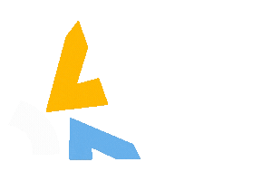

Brand & Visual
品牌識別與視覺系統
從品牌定位、關鍵視覺到應用物設計（型錄、DM、攤位），維持一致的品牌語言。

從「問題與情境」出發，先瞭解要替誰解決什麼問題，再決定要用什麼媒介（網頁、海報、動態影像、AI 生成視覺、或三者混搭）傳達。
不只是做「一張美美的視覺」，而是從策略到落地，一段完整的設計旅程。
從平面到影片，展場、網站，到 AI 圖像與影像工作流程。
為企業製作服務流程影片，整合資訊、品牌語氣與動態節奏，讓技術內容在短時間內被看懂。
將吊扇產品置入各式室內情境，以 AI 渲染與後製合成打造高質感空間照。結合資訊設計、照片與零件等素材，成為對外展會的行銷工具。
規劃並測試 Freepik、Recraft 等多種 AI 工具，並在實際運用後產出SOP。
從腳本發想、分鏡建議到影片素材的生成製作，藉由 AI 協作，降低製作時間與成本。
重整網站架構，從「工廠導向」轉為「平台導向」敘事，設計新的首頁、新增頁面，讓國際客戶更快理解供應鏈服務價值。
協助各項活動：校園徵才、好感空間展、國外展會之攤位設計，讓品牌在不同場域維持一致調性。
2024 以前多數流程仍以人工繪製、剪輯與排版為主；2025 開始大量導入 AI 工具（圖像、影片與腳本輔助）， 保有品質（甚至是提升），實際提高了整體產出的效率。
使用 Freepik / Midjourney 等工具快速產出多中素材圖片，讓短缺的圖片素材庫增量 40–70%。
透過 AI 協助拆解腳本、協助構想分鏡，並生成部分影音素材，影片專案製作效率提升約 35–60%。
利用 AI 產出 wireframe 草稿（雖然不優）、文案初稿與 CSS 建議，透過 Vibe Coding 方式呈現更多可能。
2025 對我來說，是從「設計師」走向「整合者」的一年。
從影像、網站、動態到 AI，透過更多合作，把複雜資訊整理成更清晰、易懂、易用的設計成果。